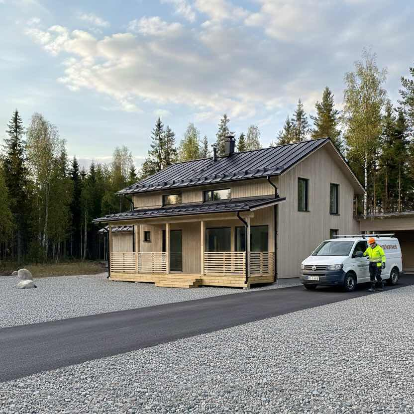
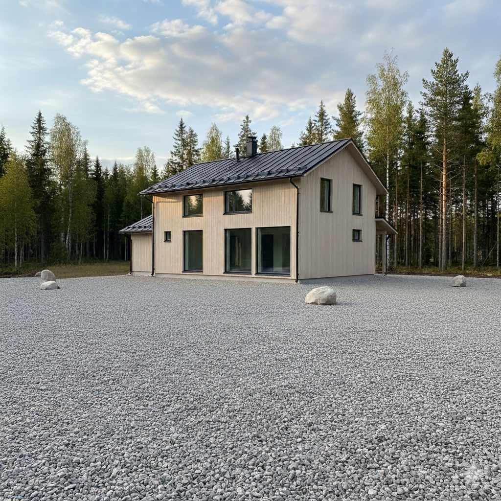
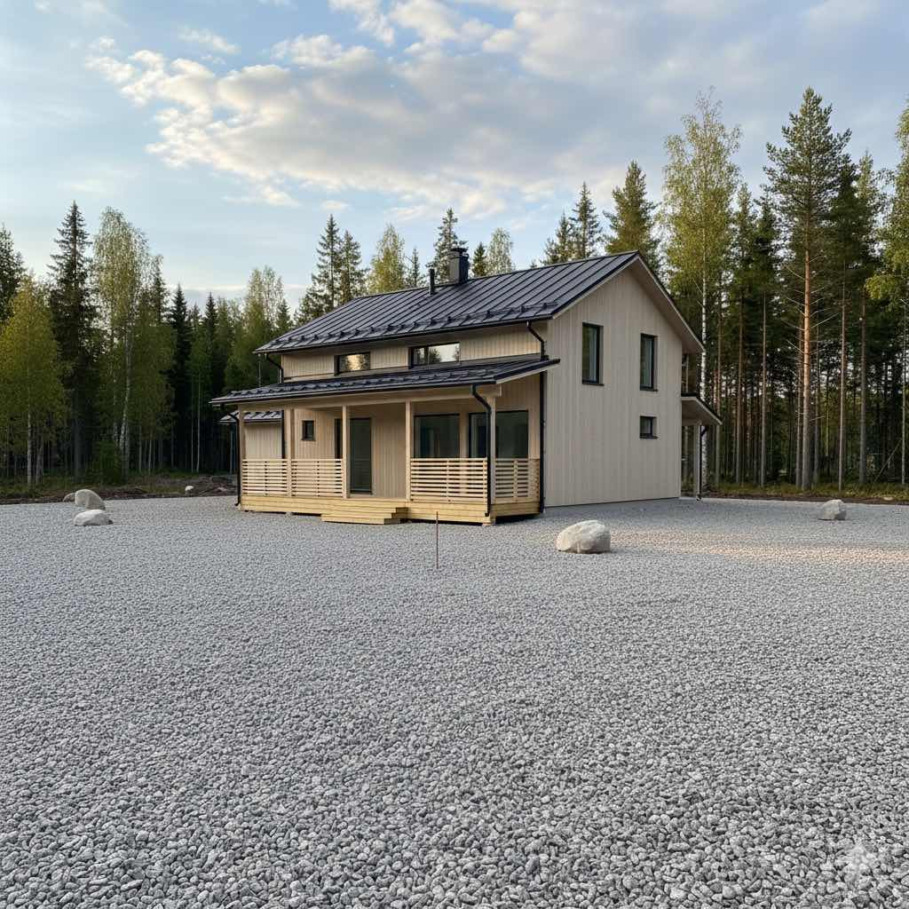
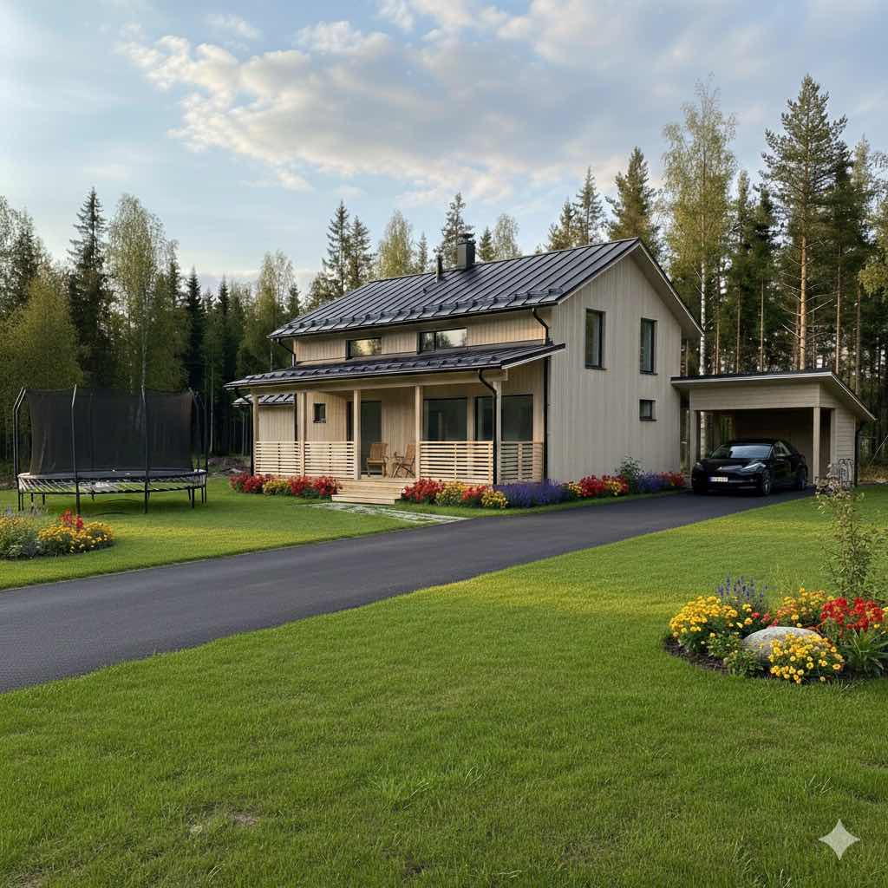

Piharemontit
Korjaamme ja uusimme Pohjois-Karjalan pihojen rakenteet nopeasti ja suunnitelmallisesti.
Piharemonttipalvelu

Onko vanha terassi lahonnut, aita kallellaan tai piharakennus kaipaava kunnostusta? Hoidamme pienet ja keskisuuret piharemontit nopeasti ja siististi.
Piharemonttimme kattavat esimerkiksi vanhan terassin purkamisen ja uusimisen, aitojen korjauksen tai piharakennuksen kunnostamisen. Arvioimme tilanteen aina ensin paikan päällä, ja toteutamme remontit kaikkiin kiinteistötyyppeihin pienistä korjauksista laajempiin kokonaisuuksiin.
Tarvittaessa yhdistämme remonttiin myös pienet pihan parannukset, kuten kulkureittien korjaukset tai piha-alueen viimeistelyn.
Näin projekti etenee
Arviointi
Kartoitetaan korjaustarpeet paikan päällä.
Tarjous
Saat selkeän suunnitelman ja kustannusarvion.
Toteutus
Työ tehdään sovitussa aikataulussa.
Lopputarkastus
Varmistamme laadukkaan ja siistin lopputuloksen.
Lisätietoja piharemontista
Piharemontti kannattaa vaiheistaa niin, että kriittiset osat tehdään ensin: kulkureitit, pintavedet, rakenteiden kantavuus ja turvallisuus. Kohteissa hyödynnetäänkin usein olemassa olevia rakenteita aina kun se on teknisesti järkevää, jolloin kustannusohjaus pysyy paremmin hallinnassa ja työt etenevät nopeammin.
Pohjois-Karjalan vaihtelevissa olosuhteissa pihan toimivuus talvella ja sadejaksoilla ratkaisee käyttömukavuuden pitkältä ajalta. Suunnittelemme esimerkiksi terassin, aidan, kulkuväylät ja autopaikan yhdeksi toimivaksi kokonaisuudeksi. Yhteydenoton jälkeen etenemme vaiheittain: kartoitus, priorisointi, tarkennettu tarjous ja toteutus sovitussa järjestyksessä.
Kuvagalleria




Piharemontti Lieksassa
Pihan rakenteiden uusiminen tekee kokonaisuudesta turvallisen ja siistin Lieksan alueella.